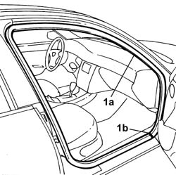
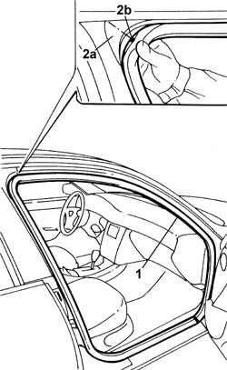

7005A32 Right front side door housing seal - R.R.
- Path
- Procedures > 70 FITTINGS > 7005 passenger compartment front side doors > 7005A FRONT DOOR ASSEMBLY > 7005A32 Right front side door housing seal - R.R.
- Kind
- repair procedure (removal / refitting; the operation number is the code)
- Applies to
- all engines; all production periods
- Interactive page
- https://sloeber94.github.io/elrnDB-lThss/en/#/109015
Applies to: all engines; all production periods
 Removing
Removing
 Refitting
RefittingSee in Op. 7040L41 RUNNING BOARD FOR RIGHT FRONT DOOR HOUSING - R.R.
-
See in Op. 7040A45 INSTRUMENT PANEL RIGHT SIDE TRIM - R.R.
-
1. Release the seal (1a) from its housing starting at the join (1b).

Applies to: all engines; all production periods
Refitting
Removing- Check that the seal is intact and not damaged.
1. Fit the seal in the housing.
2. Start from the rear top corner (2a) and position the reference mark (2b) on the seal in the centre of the actual corner.

Applies to: all engines; all production periods
- Check that the seal adheres perfectly to the bodyshell flange.
See in Op. 7040A45 INSTRUMENT PANEL RIGHT SIDE TRIM - R.R.
See in Op. 7040L41 RUNNING BOARD FOR RIGHT FRONT DOOR HOUSING - R.R.